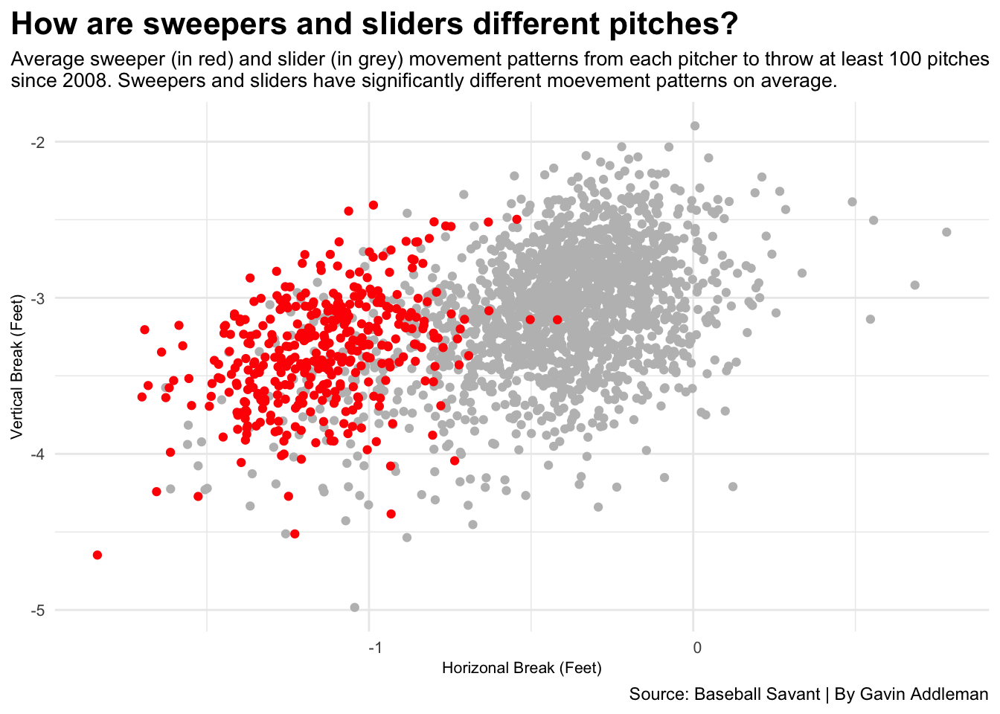

Are sweepers and sliders really different pitches?
baseball
pitches
pitchers
Author
Gavin Addleman
Published
April 10, 2026
Many Major League Baseball fans that watch a handful of regular season games every season might see the pitches named sweeper and slider and go, “They’re obviously the same pitch, how can they be different?” If you know what to look for, it can become a lot easier to not just know the difference in how each pitch looks and moves, but also the average batted ball outcomes from both pitches.
Baseball pitches are always evolving and even just slight changes in many factors like slight differences in grip on the baseball, finger pressure, arm angle, release point, velocity, spin rate, environmental factors, body mechanics and so much more can change how a pitch moves.
Sweepers and sliders are no different. The pitches may seem similar at first glance, but when you dive into them, they’re very different pitches.
Let’s first look at the history of the sweeper through Baseball Savant’s data on every sweeper thrown in MLB regular season games since 2012, the first year pitchers threw at least 100 total sweepers per pitcher.
What do we see here? Sweepers have been on the rise for the past five seasons, but also sweepers have existed as a separate pitch, even if it’s in a somewhat limited capacity.
Will the rise in the trendy sweeper continue in 2026 and beyond? Only time will tell.
The sweeper, a pitch that has existed in some way or form as early as 2008, didn’t become a widely used or recognized pitch separate from the slider until 2021 when teams like the Houston Astros and Los Angeles Dodgers popularized the pitch through pitchers like Lance McCullers, Christian Javier, Walker Buehler and Blake Trienen. In 2023, the sweeper was officially first recognized as its own pitch by MLB and Baseball Savant’s Statcast.
Cool, sweepers have been thrown more and more each year since 2021, but why? If you look at the movement profiles of sweepers and sliders, it’s easy to see why.
Code
ggplot() +geom_point(data=tot_slider, aes(x=api_break_x_arm, y=-api_break_z_with_gravity), color="grey") +geom_point(data=tot_sweeper, aes(x=api_break_x_arm, y=-api_break_z_with_gravity), color="red") +labs(x ="Horizonal Break (Feet)",y ="Vertical Break (Feet)",title="How are sweepers and sliders different pitches?", subtitle="Average sweeper (in red) and slider (in grey) movement patterns from each pitcher to throw at least 100 pitches\nsince 2008. Sweepers and sliders have significantly different moevement patterns on average.",caption="Source: Baseball Savant | By Gavin Addleman") +theme_minimal() +theme(plot.title =element_text(size =16, face ="bold"),axis.title =element_text(size =8),plot.subtitle =element_text(size =10),axis.text.y =element_text(size =8, hjust=.45),axis.text.x =element_text(size =8, hjust=0),plot.title.position ="plot" )

As you can tell, sweepers generally move at least a foot to the glove side of the pitcher, while sliders tend to be tighter breaking, with some even breaking more like a screwball, to the arm side of the pitcher.
If a pitcher throws both a sweeper and a slider, they can use an aspect of pitching that has become a buzzword in MLB pitching analytic departments in recent seasons, pitch tunneling. In short, pitch tunneling is where pitchers will try to make their different pitches look the same at the same location in the air as the pitch is thrown for as long as possible. So, if a pitcher throwing both pitches can tunnel both their sweeper and slider well, that can make it very difficult on the hitter to determine which pitch is coming.
If you’re a pitcher, you might be wondering which pitch you should start developing to be the most effective you can be on the mound. Yes, you can just throw both, but in this scenario you can only choose one.
The general goal of pitching is to get outs and limit runs. One way to determine if a pitch, especially a breaking ball like a sweeper or a slider, is an effective pitch is whether or not the pitch can limit quality contact by batters. A statistic that does exactly that is xwOBA, expected weighted on base average, a stat calculated using exit velocity, launch angle, among other sabermetric stats, to get a number that shows the quality of contact that should be expected based on previous results.
Do sweepers or sliders limit quality batter contact better?
Sweepers limit quality contact better than sliders over the past five MLB seasons..
Season
Pitch
xwOBA
Season
Pitch
xwOBA
2021
Sweeper
0.246
2021
Slider
0.282
2022
Sweeper
0.259
2022
Slider
0.279
2023
Sweeper
0.269
2023
Slider
0.291
2024
Sweeper
0.270
2024
Slider
0.290
2025
Sweeper
0.275
2025
Slider
0.302
Source: Baseball Savant | By: Gavin Addleman
One trend you can see here is that the average xwOBA for each MLB pitcher’s sweeper and slider have both trended up, not in a good way. But even with that upward trend in quality contact on sweepers and sliders, sweepers are still king among the two pitches in limiting quality contact.
Will the sweeper eventually surpass the slider and become the king of breaking pitches? We’ll just have to wait and see.